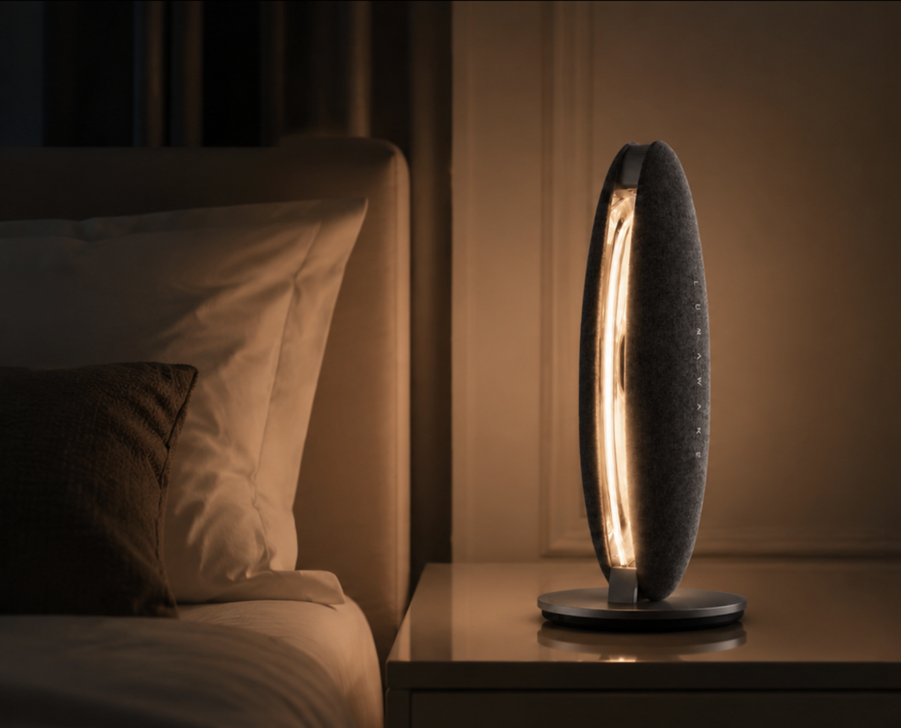
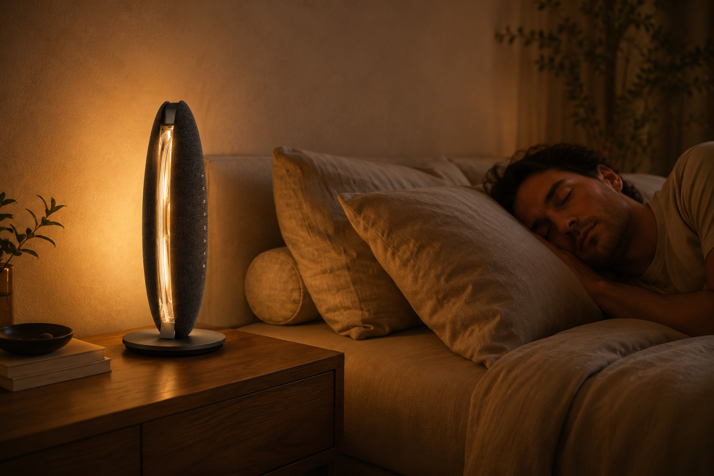
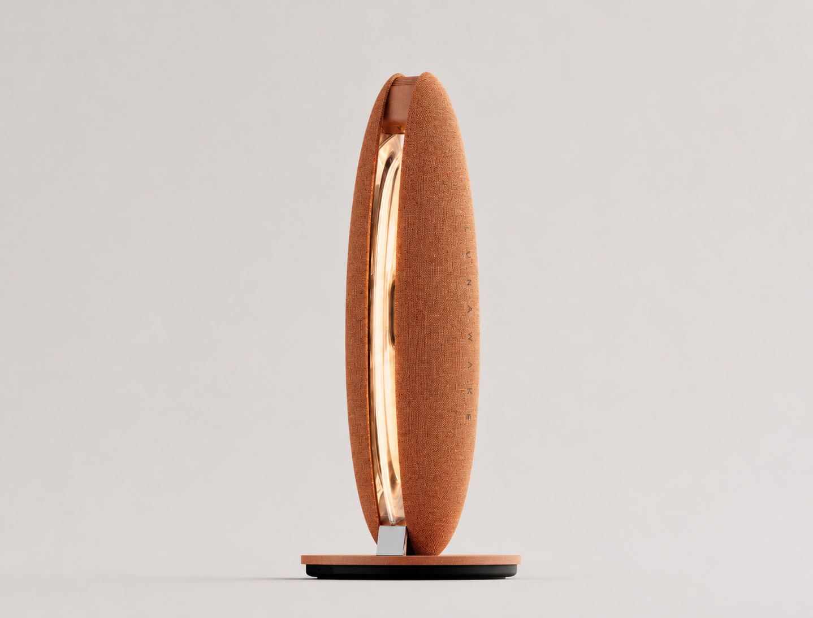

01 / Set it down
Place
Set LunaWake at the bedside, facing you. No wearable, camera, or complicated setup.

LunaWake / bedside sleep companion
A quieter way to sleep and wake—without a wearable or a camera.
Meet LunaWake
Wind down without another screen. Sleep without wearing another device. Wake inside the window you choose — and understand the night without turning it into a score.
One night, considered
LunaWake fits into the small transitions that shape a night: the last page, the room settling, and the first stretch toward morning.


How it works
Place it for wind down, let it sense quietly through the night, then wake inside the window you choose. These are real product interactions, not simulated screens.
Set LunaWake at the bedside, facing you. No wearable, camera, or complicated setup.
Contact-free signals follow presence and breathing-related movement while the room stays quiet. No camera, no contact.
Light and sound rise with the wake window, then meet the hard deadline you set without a sudden alarm.
The device
Warm light, gentle sound, contact-free sensing, and a physical privacy gate — designed to belong at the bedside and disappear into the night.
Explore finishes
No ring. No watch. No skin contact.
A physical switch cuts off acoustic sensing at the hardware level.
Core routines keep running on-device, even when the app or network is unavailable.
Wind down gently. Wake inside the window you choose.

The object in the room
The form keeps the light, sensing, and privacy controls in one calm bedside object — close enough to help, considered enough to disappear.
Inside the room / Smart & adaptable
One calm intelligence layer notices the room, understands the moment, and lets the space respond. Explore the signal first, then see how it becomes a routine across the devices you already have.
Connected devices
Breathing, movement, and room conditions stay legible without turning the night into a medical dashboard.
Contact-free · Privacy switch · Local sensingQuiet signals become context, so the room can respond without becoming another thing to manage.
Wind Down and Wake can carry into the devices you already use, so the bedroom supports the routine without asking you to manage every detail.
Matter · Connected devicesOne intention can move through light, temperature, and privacy — each device keeping its own role.
Values and connected devices shown here are illustrative. Availability depends on the final Matter setup.
The Luna App
The Luna App is the configuration and reflection layer. Set up tonight before bed, let the device run locally, then return in the morning for a clear summary.
Choose the wake target, the latest you can sleep, and the preferences that shape the room.
Core routines continue on-device when the app or network is unavailable. Physical controls remain authoritative.
Review a concise morning summary instead of an endless dashboard or a medical score.
Configuration and presentation live in the app. The bedside device remains the always-available system.
Choose your finish
Three material directions, one LunaWake experience. Select a finish to see the product render in its lit state.
AmberWarm textile, warm light.

 Real-room study / overnight routine preview
Real-room study / overnight routine previewSleep Lab
We are testing the system in real rooms and real routines: what bedside signals can tell us, how wake experiences should feel, and how to talk about sleep without overclaiming.
Can contact-free signals be useful without being intrusive?
What makes a wake-up feel gentle and dependable?
How can insights stay human and non-diagnostic?
Questions, answered
Clarity matters. Here is what LunaWake is designed to do — and where we are still learning.
No. LunaWake is a bedside system, with no ring, watch, or sensor on your body.
No. LunaWake is designed without a camera. Its microphones are used only for passive acoustic sensing, not voice commands, text-to-speech, or conversation. The physical privacy switch cuts off acoustic sensing at the hardware level.
LunaWake notices contact-free signals such as presence, movement, and breathing-related patterns. Your original breathing and body data stays on the device; the app receives a morning summary for review. It is not a medical diagnostic system.
Yes. Wind down, overnight sensing, and wake routines continue locally when Wi-Fi or the app is unavailable. Wi-Fi is needed for reports, updates, backups, and home integrations.
No. LunaWake is a consumer sleep companion. It does not diagnose, treat, or prevent any condition. Clinical validation is in progress.
Join the launch list for product updates, testing opportunities, and availability news.